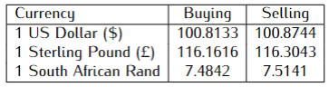

Chapter Fourteen: Commercial Arithmetic
Commercial Arithmetic
Currency is the medium of any business transaction. In Kenya, shillings are used as the basic currency unit. 1 Kenyan shilling \((Ksh)\) is equal to 100 cents \((ct)\).
Solved Examples
Use the exchange rates below to answer this question. \((3mks)\)
\(\hspace{5.1cm} Buying\hspace{2.9cm} Selling\)
1 US dollar \(\hspace{3.3cm}102.20 \hspace{3cm} 102.80\)
1 UK £ \(\hspace{4cm}132.30 \hspace{3cm} 132.95\)
A European tourist arriving in Kenya from Britain had 12,600 UK Sterling pounds (£). He converted the pounds to Kenya shillings at a commission of 5%. While in Kenya, he spent \(\frac{4}{5}\) of this money. He changed the balance to US dollars after his stay. If he was not charged any commission for this last transaction, calculate to the nearest US dollars, the amount he received.
To Convert foreign currency to Kenyan currency, the bank Buys from you (use the Buying column. But, from Kenyan currency to foreign currency, the bank sells to you (use the Selling column)
\[\begin{align*} He\, received &=12,500 \times 132.30 \\&=Ksh. 1,666,980\\ After \,commission,\, he \,gets:\\ &= \frac{95}{100}\times 1,666,980\\&=1,583,631\\ \end{align*}\]Balance after spending \(\frac{4}{5}\) of his money:
A Kenyan bank buys and sells foreign currencies at the exchange rates shown below.
\(\hspace{5.1cm} BUYING \,(KSH) \hspace{2.6cm} SELLING \,(KSH)\)
1Euro \(\hspace{4.4cm} 147.56 \hspace{4.6cm} 148.00\)
1U.S Dollar \(\hspace{3.5cm} 102.22 \hspace{4.6cm} 102.50\)
A foreign woman arrived in Kenya with 25,000 Euros. He converted all the Euros into Kenyan Shillings at the bank. He spent \(Ksh.\, 2, 610,200\) while in Kenya and converted the remaining Kenya shillings into U.S Dollars at the bank. Calculate to the nearest dollars the amount that she received. \((3mks)\)
Mr. Albert who deals in electronics sells a radio to a customer at \(Ksh.\, 1,350\) after giving him a discount of 10% but finds that he still makes a 20% profit. Find the percentage profit Mr. Albert would make if he does not give a discount. \((3mks)\)
\(\textbf{Note:}\) The marked price and the Buying Price (B.P) are always 100%
Marked Price (M.P) of the radio:
\[\begin{align*} \frac{1350\times 10\cancel{0}}{9\cancel{0}}&=Ksh.\: 1,500 \\Buying\, Price (B.P):\\ \frac{1,35\cancel{0}\times 100}{12\cancel{0}}&=Ksh. \:1,125 \end{align*}\]Profit gained if no discount was offered:
\[\begin{align*} 1,500-1,125&=Ksh. \:375 \end{align*}\]Percentage profit (P.P):
\[\begin{align*} &=\left(\frac{profit}{B.P}\right)\times 100\\ P.P&=\frac{375}{1,125}\times 100\\&=33.33\% \end{align*}\]\(\therefore\) He would make \(33\frac{1}{3}\%\) profit
Judy bought some rice at the wholesale price of \(Ksh.\, 65\) per kg. She packed three-fifths of the rice in 2 kg bags and sold each bag at \(Ksh.\, 160\). She packed the remaining in 1 kg bags and sold each bag at \(Ksh.\, 85\). After selling all the rice she found that she had made a profit of \(Ksh. \, 6460\).
a) Calculate the amount of rice she bought \((6mks)\)
b) In three significant figures, determine:
i) The percentage profit she made. \((2mks)\)
ii) The percentage profit he would have made if sold all the rice in 2 kg bags. \((2mks)\)
a)
Let the amount of rice be \(x\)
\[\begin{align*} 2Kg \,bags&=\frac{3}{5}x \end{align*}\]Selling price (S.P) for 2kg bags:
\[\begin{align*} &=\left(\frac{3}{5}x\right)\frac{160}{2}\\ &=48x\\ 1Kg\, bags&=x-\frac{3}{5}x\\&=\frac{2}{5}x \end{align*}\]Selling price for 1Kg bags:
\[\begin{align*} &=\frac{2}{5}x\times 85\\&=34x\\ Total \,selling \,price&=48x+34x\\&=82x \end{align*}\]Buying Price (B.P) of the rice:
\[\begin{align*} &=65x\\ Profit&=S.P-B.P\\ 82x-65x&=6460 \\ \frac{\cancel{17}x}{\cancel{17}}&=\frac{\cancelto{380}{6460}}{\cancel{17}}\\&=380\\ \therefore The \,amount \,of \,Rice &=380 \,kg \end{align*}\]b) i)
\[\begin{align*} Percentage\, profit (p.p)&=\frac{profit}{B.p}\times 100\\ B.p&=380\times 65\\&=24700\\ &=\left(\frac{6460}{247\cancel{00}}\right)\cancel{100}\\ &\approx 26.154\%\\ \therefore p.p&= 26.2\% \end{align*}\]ii)
\[\begin{align*} S.p&=\left(\frac{380}{2}\right)160\\&=30400\\ profit&=30,400-24,700\\&=5700\\ p.p&=\left(\frac{5700}{247\cancel{00}}\right)\cancel{100}\\ &\approx23.077\%\\ \therefore p.p&= 23.1\% \end{align*}\]- A Kenya bank buys and sells foreign currencies as shown
\(\hspace{5.1cm} Buying \,(Ksh) \hspace{2.3cm}Selling \,(Ksh)\)
1Euro \(\hspace{4cm} 116.26 \hspace{3.8cm} 116.80\)
100 Japanese Yen \(\hspace{2.2cm} 91.36 \hspace{4cm} 91.45\)
A Japanese traveling from France to Kenya had 5,000 Euros. He converted all the 5,000 Euros to Kenya shillings at the bank. While in Kenya, he spent a total of \(Ksh.\, 389,850\) and then converted the remaining Kenya shilling to Japanese Yens at the bank. Calculate the amount in Japanese Yen that he received. \((3mks)\)
- A Kenyan bank buys and sells foreign currency as shown below.
\(\hspace{4.7cm} Buying \,(Ksh)\hspace{2.3cm} Selling \,(Ksh)\)
1 Euro \(\hspace{3.8cm}116.15 \hspace{3.5cm} 116.26\)
1 US Dollar \(\hspace{2.9cm}100.43 \hspace{3.5cm} 100.80\)
A foreigner traveling from Britain arrives in Kenya with 6,500 Euros. He converts all the Euros to Kenya shillings at the bank. While in Kenya he spends a total of \(KSh.\, 459,650\) and then converts the remaining Kenya shillings to US dollars at the bank. Calculate (to the nearest dollar) the amount he receives. \((3mks)\)
- A forex bureau buys and sells American dollars in Kenya shillings at the rate shown below.
\(\hspace{2cm} Buying\hspace{3.5cm} Selling\)
\(\hspace{2.3cm} 102.40 \hspace{3.7cm}102.81\)
An American woman at the end of her tour in Kenya had \(Ksh. \,107,500\) which he converted to the dollar through the Forex bureau. How many dollars did she get? \((2mks)\)
A tourist arrived from Los Angeles and changed his US Dollar 3,650 to \(Ksh.\) He spent \(Ksh. \, 3,000\) per night in a hotel for 20 nights and a further \(Ksh. \, 9,000\) daily for the entire period. He left for South Africa having changed the balance to South African Rand. Calculate the amount of South African Rands he left with, if the bank buys and sells currencies using the table below. \((3mks)\)

Kavula sold a bag of potatoes for \(Ksh.\, 420\) and made a profit. If she sold it at \(Ksh. \,320\), she could have made a loss. Given that the profit is thrice the loss, how much did she pay for the bag of potatoes? \((3mks)\)
The marked price of a Toyota car in a dealer’s shop was \(Ksh. \, 450,000\). Tom bought the car at 7% discount. The dealer still made a profit of 13%. Calculate the amount of money the dealer had paid for the car. \((3mks)\)
A 6kg gas cylinder was bought at \(Ksh.\,2,250\) and then later sold for \(Ksh.\,2,790\). Calculate:-
a) The percentage profit. \((2mks)\)
b) The price at which it should be sold to make a profit of 28%. \((2mks)\)
Mwikali paid \(Ksh. 160\) for a blouse after getting a discount of 20%.The vendor made a profit of 25% on the sale of this blouse. What percentage profit would the vendor have made if no discount was allowed? \((3mks)\)
Mr. Nyamu who deals in computer accessories sells a laptop to a customer at \(Ksh.\, 21,500\) after giving him a discount of 10% but finds that he still makes a 25% profit. Find the profit Mr.Nyamu would make if he does not give a discount. \((3mks)\)
The marked price of a pro-box in a dealer’s shop was \(Ksh.\, 850,000\). Mucai bought the car at 8% discount. The dealer still made a profit of 15%. Calculate the amount of money the dealer had paid for the car. \((3mks)\)
An electronic company imported into the country some speakers that cost \(Ksh.\, 25,750\) each. The government imposed an import duty of 20% and a sales tax of 15%. If the company decides to make a 20% profit on sales, calculate to the nearest shillings the selling price of each speaker. \((4mks)\)
A manufacturer sells an empty crate of soda to a trader at a profit of 50%. The trader sells it for \(Ksh.\, 360\) at a profit of 20%. Find
a) The trader’s buying price. \((2mks)\)
The cost of manufacture of an empty crate. \((3mks)\)
A Kenyan tradesman owes US $ 180,000 to a company in the United States of America. The Kenyan can either pay through his account in Kenya or through his account in the United Kingdom. Which method is cheaper and by how much? (Give your answer in Kenyan shillings given that: \((4mks)\)
\(\hspace{1cm} 1\, US \,dollar \,= 102.74\, Kenyan \,shillings.\)
\(\hspace{1cm} 1 \,Sterling \,pound = 1.79 \,US \,dollar\)
\(\hspace{1cm} 1\, Sterling \,pound = 132.87 \,Kenyan\, shillings\)
- A Forex Bureau in Kenya buys and sells foreign currencies as shown below:
\(\hspace{4cm} Buying\, (Ksh) \hspace{2.7cm} Selling \, Ksh)\)
Chinese Yuan \(\hspace{2cm} 15.34 \hspace{4cm} 15.58\)
South African Rand \(\hspace{1cm} 11.28 \hspace{4cm} 11.45\)
A merchant from China converted 205,250 Chinese Yuan into Kenya Shillings.
Calculate the amount of Money, in Kenya shillings, that she received. \((1mk)\)
While in Kenya, the merchant spent \(Ksh.\, 1,858,000\) and then converted the balance to South African Rand. Calculate the amount of money, to the nearest Rand, that he received. \((3mks)\)
A vehicle sales agent is paid a commission on all vehicles bought through him. During a certain month, he sold 2 cars at \(Ksh. 1.5 \,million\) each, 5 probox at \(Ksh.\, 650,000\) each and 5 vans at \(Ksh.\, 1.8 \,million\) each. If he was paid a total commission of \(Ksh.\, 720,000\), calculate the percentage rate of commission he was paid in 3 significant figures. \((3mks)\)
Kang’ethe bought a pair of shoes for \(Ksh.\, 1,600\) and marked it at a price such that after allowing his customer a 20% discount, he would make a profit of 25%. Calculate the marked price of the shoes. \((4mks)\)
Muringo bought a skirt at \(Ksh.\, 600\) and marked it at a price such that after allowing her customer a 5% discount she would make a profit of 33%. Find the marked price of the skirt. \((4mks)\)
Noah sold a second-hand computer which was marked at \(Ksh. 24,000\) to a customer at 19% discount. If he still made a 20% profit on the cost price, what was its cost price? \((4mks)\)
A businessman sold a pair of shoes which was marked at \(Ksh.\, 2,700\) to a customer allowing a 15% discount. If he still made a 35% profit on the cost price, determine how much he had paid for the pair of shoes. \((4mks)\)
The marked price of a second-hand car was \(Ksh.\, 625,000\). Mwendia sold the car at a discount of 7.2% and received \(Ksh.\, 49,300\) as a commission of the sale. Calculate the percentage rate of commission he was paid. \((3mks)\)
Three partners Ndirangu, Isa, and Mukami contributed \(Ksh. \,700,000\), \(Ksh.\, 500,000\) and \(Ksh.\, 900,000\) respectively to start a business of a mini-bus plying the Embu– Nairobi route. The mini-bus carries 25 passengers with each paying \(Ksh.\, 250\). The mini-bus makes two round trips each day and ever full. Each day \(Ksh.\, 8,000\) is used to cover running costs and wages.
a) Calculate their net profit per day. \((2mks)\)
b) The matatu works for 25 days per month and is serviced every month at a cost of \(Ksh.\,12, 000\). Calculate their monthly in July. \((1mk)\)
c) The three partners agreed to save 42% of the profit, 75% of the remainder to be shared in the ratio of their contribution. Calculate Mukami’s share in the month of July. \((4mks)\)
d) The mini-bus developed mechanical problems and they decided to sell it through an agent who charged a commission of 5% on the selling price. Each partner received \(Ksh.\, 520,000\) from the agent after he had taken his commission. Determine the price at which the agent sold the matatu. \((3mks)\)
Wangari bought some sugar at \(Ksh.\, 80\) per kg. She packed five-eighths of the sugar in \(\frac {1}{2}\) kg packets which she sold at \(Ksh.\, 60\) per packet. She packed the remaining sugar in 1 kg packets and sold them at \(Ksh.\, 110\) per packet. She sold all the sugar in this way and made a profit of \(Ksh.\, 10,875\).
a) Determine the amount of sugar she bought. \((4mks)\)
b) Calculate to one decimal place:
c)
i) The percentage profit she made. \((3mks)\)
ii) The percentage profit she would have made if she had sold all the sugar at \(\frac{1}{2}\) kg packets. \((3mks)\)
A manufacturer made a mattress and sold it to a wholesaler at a profit of 25%. The wholesaler sold the mattress to a shopkeeper at a profit of 32%. The shopkeeper finally sold the mattress to a customer at 50% profit.
a) Determine how much a customer paid for the mattress that had cost the manufacturer \(Ksh.\, 1800\) to make. \((3mks)\)
b) A customer paid \(Ksh.\, 3,465\) for another mattress. Determine how much it had cost the manufacturer to make the mattress. \((3mks)\)
c) The shopkeeper bought the mattress which had cost the wholesaler \(Ksh.\, 3,500\). He marked the mattress at a price such that after allowing his customer a discount of 10%, he would still make a profit of 50%. Find the price at which the mattress was marked. \((4mks)\)